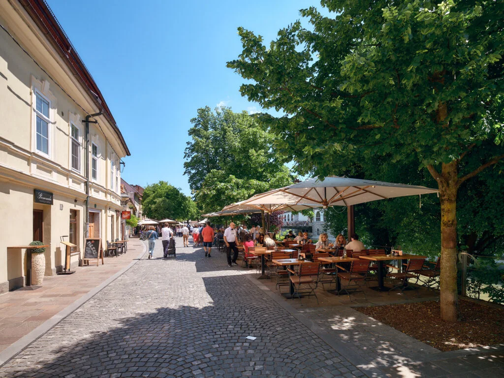
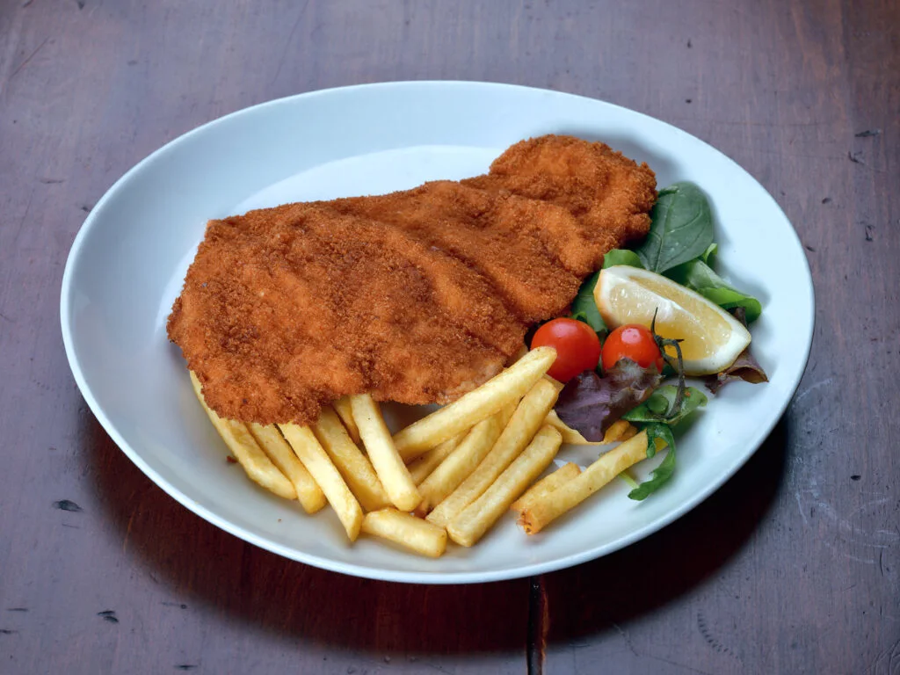
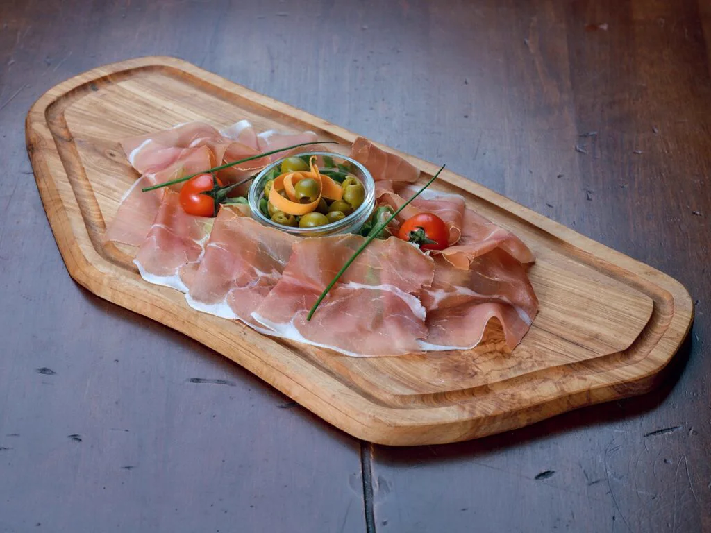
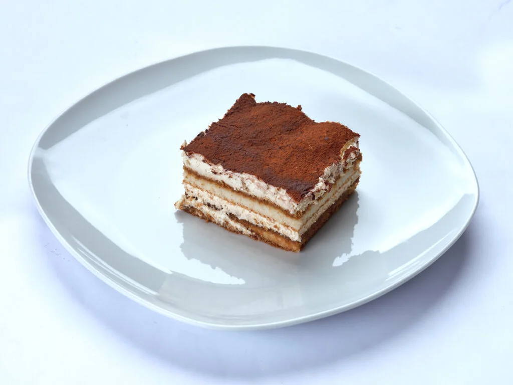
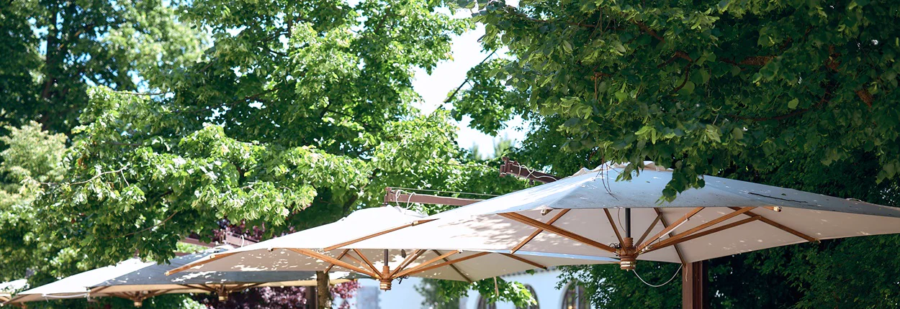

Restavracija & pizzerija, Ljubljana
Promenada Petkovškovo nabrežje 9
Bar pod oboki, terasa neposredno ob Ljubljanici in pogled na Ljubljanski grad. Pizze, testenine, rižote, ribe in jedi z žara.
Terasa ob rekiMize neposredno ob Ljubljanici, v središču mesta.
Pod gradomPogled na Ljubljanski grad z nabrežja.
Štirje jezikiJedilni list v slovenščini, angleščini, nemščini in italijanščini.





Terasa
Mize na nabrežju, pod senčniki in krošnjami.
Terasa je neposredno ob Ljubljanici, na pešpoti v samem središču Ljubljane, pod Ljubljanskim gradom. Sem se pride na kosilo, na kavo po sprehodu ali na večerjo, ko se nabrežje umiri.
Po navedbah restavracije: vina slovenskih vinarjev in hišne sladice. Pripeljite družino.
Rezervirajte mizo na terasiRezervacije
Rezervirajte si mizo.
040 516 308Za skupine in hišno ploščo za dva povejte število oseb in uro. Pišete lahko tudi na info@restavracija-promenada.si.
Restavracija Promenada
Petkovškovo nabrežje 9, 1000 Ljubljana (zemljevid)
Odpiralni čas vpišemo po vaših podatkih; na predogledu ga ne ugibamo.